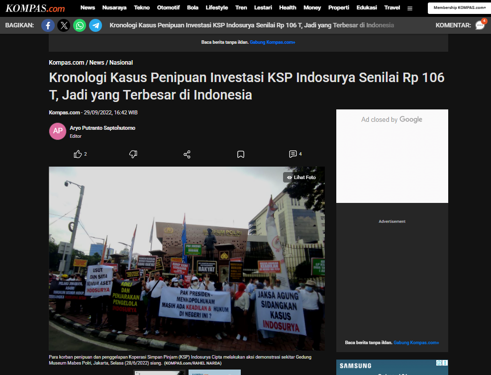

Lembaga Keuangan Syariah Perbankan
Lembaga Keuangan Syariah Perbankan
A. Pengertian Lembaga Keuangan Syariah
Lembaga keuangan syariah perbankan adalah institusi keuangan yang beroperasi berdasarkan prinsip-prinsip syariah Islam. Prinsip ini melarang praktik riba (bunga), gharar (ketidakjelasan), dan maysir (spekulasi). Sebagai gantinya, lembaga ini menerapkan sistem bagi hasil, jual beli, dan sewa dalam akad-akadnya.
Contoh akad yang digunakan:
- Mudharabah (kerja sama antara pemilik modal dan pengelola)
- Musyarakah (kemitraan usaha)
- Murabahah (jual beli dengan margin keuntungan)
- Ijarah (sewa menyewa)
Karakteristik Lembaga Keuangan Syariah
- Bebas Riba: Semua bentuk bunga dilarang, karena dianggap menindas dan tidak adil.
- Bagi Hasil: Keuntungan dan kerugian dibagi sesuai dengan kesepakatan dalam kontrak.
- Akad Islami: Setiap transaksi didasarkan pada perjanjian yang sesuai syariah.
- Pengawasan Syariah: Diawasi oleh Dewan Pengawas Syariah (DPS) untuk menjamin kesesuaian dengan prinsip Islam
B. Pengertian Lembaga Keuangan Non-Syariah
Lembaga keuangan non-syariah atau konvensional adalah institusi yang beroperasi dengan sistem bunga dalam transaksi keuangan. Bank konvensional mendapatkan keuntungan dari selisih antara bunga yang dibayarkan kepada penabung dan bunga yang dikenakan kepada peminjam.
D. Perbedaan Utama antara Lembaga Keuangan Syariah dan Non-Syariah
Strategi pemasaran Islami melibatkan beberapa pendekatan seperti:
| Aspek | Lembaga Keuangan Syariah | Lembaga Keuangan Non-Syariah |
|---|---|---|
| Dasar Hukum | Syariah Islam | Hukum Umum (Positif) |
| Sistem Keuntungan | Bagi hasil, margin | Bunga tetap/berjenjang |
| Pengawasan | Dewan Pengawas Syariah (DPS) | OJK dan Bank Indonesia |
| Jenis Akad/Produk | Mudharabah, Musyarakah, Murabahah, Ijarah | Kredit, tabungan berbunga |
| Tujuan | Keadilan, kemitraan, keberkahan | Keuntungan finansial |
Studi Kasus Lembaga Keuangan Non Perbankan
Bagaimana Semestinya Penanganan dan Pencegahan Kasus KSP Indosurya
1. Pengawasan Preventif Harus Lebih Proaktif
KSP Indosurya berhasil menghimpun dana dari masyarakat dalam jumlah sangat besar (hingga Rp 106 triliun), padahal tidak memiliki izin sebagai lembaga penghimpun dana masyarakat seperti bank.
Semestinya:
- OJK, Kementerian Koperasi, dan Satgas Waspada Investasi perlu membentuk sistem deteksi dini berbasis laporan keuangan, promosi publik yang mencurigakan (misalnya bunga tinggi tak masuk akal), dan aduan masyarakat.
- Koperasi yang menjanjikan keuntungan di atas pasar seharusnya langsung diperiksa dan diberi peringatan dini, bukan hanya setelah masalah membesar.
2. Pemisahan Fungsi Koperasi Simpan Pinjam dan Investasi
Salah satu akar masalah adalah kaburnya batas antara kegiatan koperasi simpan pinjam dengan skema investasi.
Semestinya:
- Regulasi koperasi diperkuat untuk melarang praktik investasi dana masyarakat dengan imbal hasil tetap tinggi, kecuali melalui izin dan pengawasan ketat.
- Koperasi tidak boleh melakukan pengumpulan dana yang menyerupai deposito jika tidak diawasi oleh OJK atau Bank Indonesia.
3. Koordinasi Lintas Lembaga Diperkuat
Kasus Indosurya menunjukkan lemahnya koordinasi antara OJK, Kementerian Koperasi, dan aparat penegak hukum.
Semestinya:
- Perlu dibentuk satuan tugas nasional khusus menangani keuangan non-bank ilegal, dengan wewenang lintas lembaga dan sistem pelaporan terpadu.
Link Praktik Muamalah
Evaluasi Akhir Project : Akad Jual Beli
https://youtu.be/tC07KFVsmGg?si=7wJ085MiHzQ6QF37Referensi
Lembaga Keuangan Syariah Perbankan
- Antonio, M. S. (2001). Bank Syariah: Dari Teori ke Praktik. Jakarta: Gema Insani.
- Otoritas Jasa Keuangan (OJK). (2023). Statistik Perbankan Syariah. www.ojk.go.id
- Ascarya. (2007). Akad dan Produk Bank Syariah. Jakarta: Bank Indonesia.
- Karim, A. A. (2004). Ekonomi Islam: Suatu Kajian Kontemporer. Jakarta: Gema Insani.
Studi Kasus Lembaga Keuangan Non Perbankan
- Aryo Putranto Saptohutomo. (2022). Kronologi Kasus Penipuan Investasi KSP Indosurya Senilai Rp 106 T, Jadi yang Terbesar di Indonesia. https://nasional.kompas.com/read/2022/09/29/16422941/kronologi-kasus-penipuan-investasi-ksp-indosurya-senilai-rp-106-t-jadi-yang?page=all